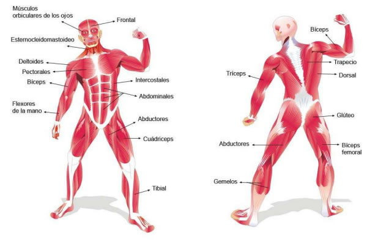

LA MUSCULATURA
LA MUSCULATURA. Los MÚSCULOS son los órganos de nuestro cuerpo que se encargan de realizar los movimientos en nuestro cuerpo. Realizan el movimiento a través de su contracción y relajación.
Los músculos tiran de las articulaciones, lo que nos permite movernos. También ayudan al cuerpo a desempeñar funciones como masticar alimentos y transportarlos a través del sistema digestivo. Estando sentados y completamente quietos, incluso cuando dormimos, hay músculos de nuestro cuerpo que están en constante movimiento.
En nuestro cuerpo tenemos tres tipos de músculos:
- Los músculos esqueléticos, estriados o voluntarios. Se unen a los huesos a través de tendones, como en las piernas, los brazos y la cara. Mantienen unido al esqueleto, dan forma al cuerpo y lo ayudan en los movimientos cotidianos. Se pueden contraer (acortar o tensar) rápida y enérgicamente, pero se cansa con facilidad. Algunos de los movimientos que realizan son: Flexión, extensión, pronación, supinación, elevación, aducción, abducción, circunducción…
- Los músculos lisos o involuntarios. Son músculos en los que NO podemos controlar conscientemente los movimientos. Son controlados automáticamente por el sistema nervioso (motivo por el que también reciben el nombre de "involuntarios"). Se localizan en las paredes del estómago y de los intestinos, o en las paredes de los vasos sanguíneos, entre otros. Los músculos lisos tardan más tiempo en contraerse que los esqueléticos, pero pueden permanecer contraídos durante más tiempo porque no se cansan tan fácilmente.
- El músculo cardíaco se encuentra en el corazón. Es un músculo de tipo involuntario. Sus contracciones, rítmicas y enérgicas, expulsan la sangre del corazón mientras late.
En el cuerpo humano tenemos 696 músculos. Localiza en el cuerpo humano y apréndete los siguientes:
Esternocleidomastoideo, deltoides, trapecio, pectoral mayor, dorsal, glúteos, abdominales, bíceps braquial, tríceps, cuádriceps, bíceps femoral, gemelos, tibial anterior.

Cuando te los hayas estudiado, prueba que los sabes localizar respondiendo el siguiente formulario. Sólo podrás hacerlo una vez, así que procura hacerlo cuando ya te lo hayas estudiado.